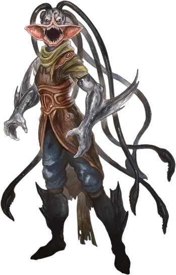

Отпрыск глубин
Deep Scion
Средний Монстр, обычно хаотично-злой

Класс Доспеха 11
Хиты 67 (9к8 + 27)
Скорость 30 футов (в гибридной форме: 20 футов), плавая 40 футов (в гибридной форме)
| мод | спас | ||
|---|---|---|---|
| СИЛ | 18 | +4 | +4 |
| ЛОВ | 13 | +1 | +1 |
| ТЕЛ | 16 | +3 | +3 |
| мод | спас | ||
|---|---|---|---|
| ИНТ | 10 | +0 | +0 |
| МДР | 12 | +1 | +3 |
| ХАР | 14 | +2 | +4 |
Навыки Ловкость рук +3, Обман +6, Проницательность +3, Скрытность +3
Чувства тёмное зрение 120 футов, пассивное Восприятие 11
Языки Общий, Акван, Воровской жаргон
Опасность 3 (700 опыта)
Бонус мастерства +2
Среда обитания Побережье, Под водой
Особенности
Амфибия (Только в гибридной форме). Глубинный отпрыск может дышать и воздухом и водой.
Действия
Мультиатака. В форме гуманоида глубинный отпрыск совершает две атаки Боевым топором или совершает одну атаку Укусом и две атки Когтями.
Боевой топор. Рукопашная атака оружием: +6 к попаданию, досягаемость 5 футов, одна цель. Попадание: 8 (1к8 + 4) рубящего урона или 9 (1к10 + 4) рубящего урона, если использовать оружие двумя руками.
Укус (только в гибридной форме). . Рукопашная атака оружием: +6 к попаданию, досягаемость 5 футов, одно существо. Попадание: 6 (1к4 + 4) колющего урона.
Когти (только в гибридной форме). . Рукопашная атака оружием: +6 к попаданию, досягаемость 5 футов, одна цель. Попадание: 7 (1к6 + 4) рубящего урона.
Психический визг (только в гибридной форме; перезаряжается после короткого или продолжительного отдыха). . Глубинный отпрыск испускает ужасный крик, слышимый на 300 футов. Существа не далее 30 футов от глубинного отпрыска должны преуспеть в спасброске Мудрости Сл 13 или стать ошеломленными до конца следующего хода глубинного отпрыска.
В воде психический визг также телепатически передает воспоминания глубинного отпрыска о последних 24 часах его хозяину вне зависимости от дистанции, пока он и его хозяин находятся в одном и том же водоёме.
Бонусные действия
Перевертыш. Глубинный отпрыск может превратиться в гибридную форму (рыбочеловека) или обратно в свою истинную форму. Его характеристики, кроме скорости, одинаковы в обеих формах. Любое снаряжение, которое на нем надето или он несет в руках, не трансформируется. Глубинный отпрыск превращается в свою истинную форму если умирает.
Описание
Отпрыски глубин начинают свою жизнь как люди, которых похитили с берега или спасли с тонущего корабля, и которым подводные силы предложили ужасную сделку: сдаться душой и телом или утонуть. Подчинившиеся становятся субъектами древнего ритуала, широко распространенного среди злобных водных существ. Это очень болезненный метод и результат никогда не определен, но когда он срабатывает, магия трансформирует дышащее воздухом существо в перевёртыша, который может принимать свою водную форму.
Отпрыск глубин появляется из глубины и служит своему подводному господину, скорее всего кракену или другому древнему существу из глубин. Хотя он и носит тело и разум личности, которой он когда–то был, как маску, теперь существо помешано на выполнении желаний хозяина. Иногда отпрыск глубин возвращается в свой бывший дом и его приветствуют как героя – ведь он неожиданно оказывается жив, когда надежда уже была потеряна. В других случаях отпрыск глубин берет себе новую личность. В любом случае долг отпрыска глубин – внедриться в мир дышащих воздухом и докладывать своему хозяину. Получив задание, отпрыск глубин прогрызает себе путь в жизнь ничего не предполагающего врага в качестве лучшего друга, неотразимого любовника, превосходного кандидата на работу или какой–то другой роли, которая позволит миньону выполнять приказы хозяина.
Тренировки, которые проходит отпрыск глубин, избавляют его от эмпатии к тем, за кем он шпионит. Хотя он может вести себя глупо и влюбленно, смеяться над шуткой друга или казаться разгневанным несправедливостью, каждое такое действие искусственно для отпрыска глубин, это лишь средство для достижения цели. Он верит, что его настоящая форма – это та, которую он принимает, вернувшись в море, к которому он относится как к дому. По иронии судьбы, если отпрыск глубин убит в рыбной форме, то магия, которая избавила его от эмоций исчезает и остается лишь тело личности, которой отпрыск глубин когда–то был.